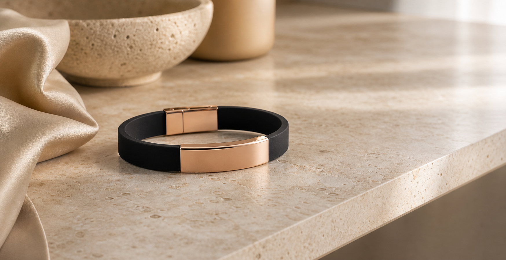
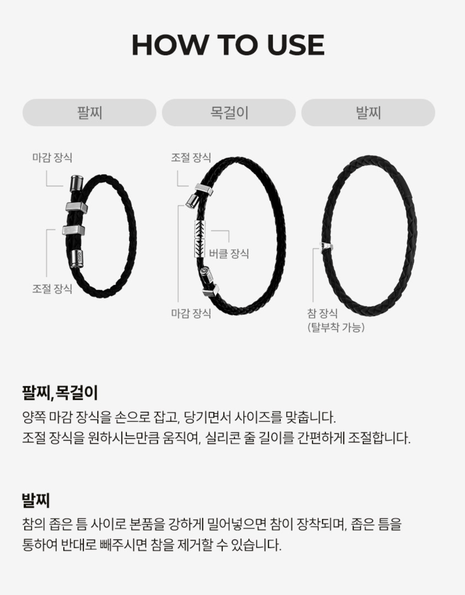
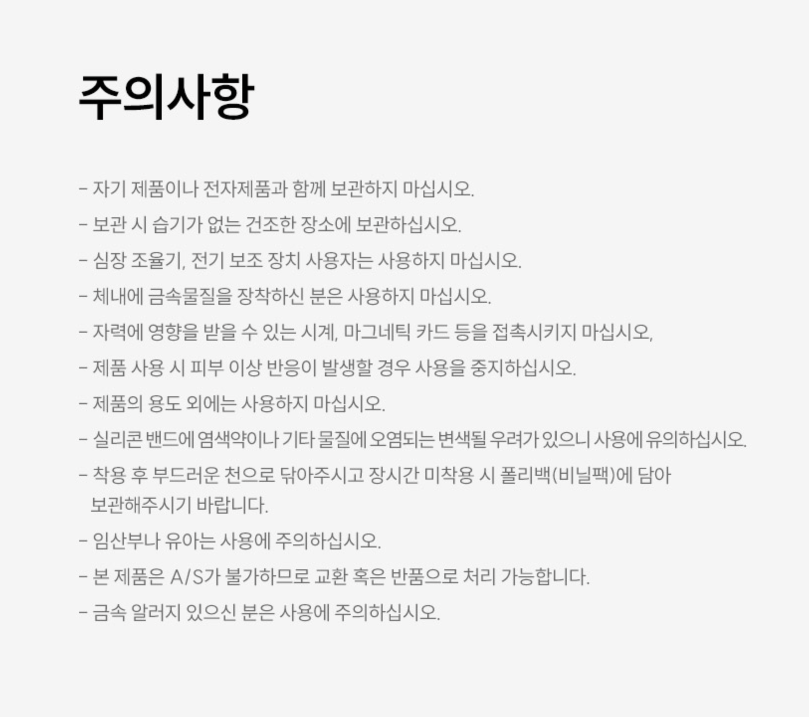

2등급 의료기기
의료용 자기발생기 기준에 따라 제품 정보를 확인할 수 있도록 등급과 인증 정보를 상단에서 명확히 보여줍니다.


WHY WE MADE
의료기기 팔찌는 보기 좋은 제품이기 전에 확인 가능한 제품이어야 합니다. 클라비스는 근육통 완화 목적이라는 허가된 범위 안에서, 매일 착용하기 쉬운 형태와 주얼리의 완성도를 함께 정리합니다.
질환 치료, 만성 통증 개선, 효과 보장처럼 허가 범위를 벗어나는 표현은 사용하지 않고, 표시사항과 사용 전 확인 정보를 명확히 노출합니다.
MEDICAL DEVICE NOTICE
의료용 자기발생기 기준에 따라 제품 정보를 확인할 수 있도록 등급과 인증 정보를 상단에서 명확히 보여줍니다.
사용목적은 “근육통의 완화 등을 목적으로 영구자석의 자계를 이용하는 기구” 범위 안에서 안내합니다.
제조업허가번호 제 8620호, 제조인증번호 제인 21-4732호를 제품 표시사항과 함께 확인합니다.
WHAT IS NEODYMIUM
클라비스 의료기기 팔찌는 네오디뮴 영구자석을 제품 구조 안에 배치합니다. 소재 설명은 제품의 작용 원리를 이해하기 위한 정보이며, 허가받은 사용목적을 넘어서는 효능 표현으로 확장하지 않습니다.
작은 제품 구조 안에서도 영구자석 코어를 구성할 수 있는 고성능 자석 소재입니다.
인증받은 사용목적인 근육통 완화 범위 안에서 제품 정보를 설명합니다.
BRACELET STRUCTURE
영구자석침 2.5mm X 12ea (3600 ± 20%) 기준을 제품 표시사항에서 확인할 수 있습니다.
손목 둘레에 맞게 조절해 착용하는 구조로, 사용 전 제품별 사용설명서를 함께 확인해야 합니다.
의료기기 표시사항을 유지하면서도 일상에서 착용 가능한 주얼리형 제품 인상을 전달합니다.
MATERIAL & FINISH
중앙, 날개, 조절, 마감 장식은 황동이며 화이트골드 또는 로즈골드 도금 사양으로 안내합니다.
손목 둘레에 맞게 조절하는 실리콘 밴드 구조로, 착용감과 사용법을 함께 보여줍니다.
제품 안에 배치된 영구자석 정보를 표시사항 기준으로 정리합니다.
WEARING SCENE
MEDICAL DEVICE LABEL
판매 페이지에서는 제품명, 품목명, 모델명, 사용목적, 인증번호를 누락 없이 확인할 수 있어야 합니다.
HOW TO USE
손목에 맞게 실리콘 줄을 조절한 뒤 고리에 고정합니다. 사용 전 제품별 사용설명서와 주의사항을 반드시 확인해 주세요.

FAQ
증상이 심하거나 지속되는 경우 제품 사용만으로 판단하지 말고 전문의와 상담해 주세요.
약물치료, 물리치료 등과 병행 여부는 개인 상태에 따라 다를 수 있으므로 담당 의료진과 상담 후 사용해 주세요.
피부 이상 반응, 불편감, 증상 악화 등 이상이 느껴지면 즉시 사용을 중단하고 전문의와 상담해 주세요.
SAFETY NOTICE
REVIEW GUIDELINE
“가볍다”, “손목에 잘 맞는다”, “일상복에 어울린다”처럼 착용 경험 중심으로 후기를 구성합니다.
근육통 완화 목적 범위는 유지하되 질환 치료, 만성 통증 개선, 효과 보장 표현은 노출하지 않습니다.
사용목적, 인증번호, 사용방법, 주의사항을 다시 확인하도록 후기 영역 이후에도 안내합니다.

본 제품은 의료기기이며, 사용 전 사용설명서를 반드시 읽어 주세요.
부작용 또는 이상 반응이 발생할 경우 즉시 사용을 중단하고 전문의와 상담해 주세요.
상품 배송일로부터 7일 이내 사용하지 않은 제품에 한해서 교환 및 반품이 가능하며, 왕복 택배비 6,000원은 고객 부담입니다.
단순 변심 및 사용자 과실로 인한 경우에는 반품이 어려울 수 있습니다.
본 제품은 구매 후 1년간 품질을 보장합니다. 단, 고객 부주의로 인한 파손 발생 시 유상으로 A/S 처리 됩니다.
고객 문의센터 02-3785-3725
SMART STORE
가격, 배송, 교환/반품 기준은 스마트스토어 최종 정책 기준으로 표시합니다.
구매하러가기